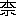
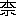

法句の語は大別して二種の義に解釋せらる、一は法は教の義にして法句とは釋尊の教の文句なり、又他の一は法は本體を詮し、一切萬象の終極の體即ち涅槃の義、而して句の原語は元來足跡の義にして、轉じて道或は句の義となりしものなれば、その原の意味にて道の義と解すれば法句は涅槃への道とも譯せらる、涅槃への道は換言せば覺らす教の意味なり、今は何れにても可なれども、古來漢譯されて人口に膾炙せるまゝ法句と稱へたり。
法句の内容は各章の題號にても察せらるゝが如く、佛教の立脚地より日常道徳の規準を教へたるもの、社會は生活苦、病苦、老苦、相愛別離の苦、仇敵會合の苦、乃至は死苦に惱まされ、さいなまる、如何にして是等の苦惱を永久に脱し得べきか、如何にして絶待安穩なる涅槃に達し得べきか、換言せば、世人は事物の眞相に通ぜず、妄念、謬見、貪愛、
 慢等の心の病の爲に苦しめられ、不明にして執著し、違背し、日夜擾惱を増す、智慧の眼を開いて妄念に打克てば身心ともに安靜なることを得、終に涅槃の状態に達す、此の意味を教ゆるが佛教の目的なり、法句經の所詮なり、修養の龜鑑とし、道業の警策として、座右に備へ朝夕披讀し、拳々服膺せば、精神の向上發展、動作の方正勤勉、處世の要術、何れの方面にも良藥たらざる無し。
慢等の心の病の爲に苦しめられ、不明にして執著し、違背し、日夜擾惱を増す、智慧の眼を開いて妄念に打克てば身心ともに安靜なることを得、終に涅槃の状態に達す、此の意味を教ゆるが佛教の目的なり、法句經の所詮なり、修養の龜鑑とし、道業の警策として、座右に備へ朝夕披讀し、拳々服膺せば、精神の向上發展、動作の方正勤勉、處世の要術、何れの方面にも良藥たらざる無し。法句經は全部頌文より成る、古代佛教の聖典たる律や經の中に散在せる金玉の名句を集めたるもの所謂る教訓句集（didactic stanzas）とか、華句集（anthology）とかと稱すべきものにて、作者は勿論釋尊とす、其書の性質上、時代を經るに隨つて本文に増減を來すを免れず、西紀二二四に竺律
 と呉支謙とが共譯せる法句は五百偈本に更に足して七百五十三偈ありとす、而して支謙（？）の記する所に由れば當時已に五百偈、七百偈、九百偈の三本ありとす、今譯出する所の波梨本は二十六章四百二十三頌あり、重複せる一頌を除けば四百二十二頌なり、この頌數の少き點より見て波梨所傳の方が一層故きを知るべし。
と呉支謙とが共譯せる法句は五百偈本に更に足して七百五十三偈ありとす、而して支謙（？）の記する所に由れば當時已に五百偈、七百偈、九百偈の三本ありとす、今譯出する所の波梨本は二十六章四百二十三頌あり、重複せる一頌を除けば四百二十二頌なり、この頌數の少き點より見て波梨所傳の方が一層故きを知るべし。集録者は不明なれども、北方所傳の法句經即ち波梨所傳に増加したる集録は法救（Dharmat
 ta）撰と傳へらる、而して法救の年代は詳ならざれども佛滅後約四百年、西紀前一世紀頃ならんと推定せらる、然らば波梨所傳の法句は前述の理に因り是より以前ならざる可らず、又集録せし時はたとひ佛滅後若干百年を經しとするも、集められたる頌文の大部分は佛陀の自説たるや疑なし、又後年佛弟子の追加
ta）撰と傳へらる、而して法救の年代は詳ならざれども佛滅後約四百年、西紀前一世紀頃ならんと推定せらる、然らば波梨所傳の法句は前述の理に因り是より以前ならざる可らず、又集録せし時はたとひ佛滅後若干百年を經しとするも、集められたる頌文の大部分は佛陀の自説たるや疑なし、又後年佛弟子の追加 入の頌文を含むにしても。
入の頌文を含むにしても。佛の説法は質問者ありて、此に對して酬答する時と、問者無きに佛が進んで教訓する時とあり、前者は
nam）とも云はる、無問自説と翻ぜらる、心の琴線に觸れて詠出せる詩なり、此の點より見ても、法句經は單刀直入的に釋迦教の本意を探るに最もふさはしきものなり。單に文句が原始的成立なるに由るのみに非ず。本書
昭和十年四月
［＃改丁］荻原雲來
二首づつ對比して述べてあるを以て雙敍と名づく。
一 諸事意を以て先とし、意を主とし、意より成る、人若し穢れたる意を以て語り、又は働く時は其がために苦の彼に隨ふこと猶ほ車輪の此を牽くものに隨ふが如し。
二 諸事意を以て先とし、意を主とし、意より成る、人若し淨き意を以て語り、又は働く時は其がために樂の彼に隨ふこと影の（形を）離れざるが如し。
三 彼れ我を罵り、我を打ち、我を破り、我を掠めたりと堅く執する人の怒は息むことなし。
四 彼れ我を罵り、我を打ち、我を破り、我を掠めたりと堅く執せざる人の怒は止息に歸す。
五 世の中に怨は怨にて息むべきやう無し。無怨にて息む、此の法易はることなし。
六 然るに他の人々は、「我々は世の中に於て自制を要す」と悟らず、人若し斯く悟れば其がために爭は息む。
七 生活に安逸を求め、感官を護らず、飮食度なく、懈怠怯弱なれば、魔は彼を伏す、猶ほ風の弱き樹に於けるが如し。
感官を護らず―視、聽、嗅、味、觸の五欲を恣にすること。
八 生活に安逸を求めず、感官を護り、飮食度あり、信心あり、勇猛なれば、魔は彼を伏せず、猶ほ風の巍然たる山に於けるが如し。
九 自ら
濁穢の衣―袈裟の翻名なり、又は不正色とも言ふ。
一〇 自ら濁穢を吐き、專ら善く諸の戒を念じ、自制と眞實とを具ふるときは彼は濁穢の衣に應ず。
一一 不實を實と
一二 實を實と知り不實を不實と知る人は、實を了解して正思惟に住す。
一三 屋を葺くに粗なれば雨漏るが如く、心に修養なくんば、貪欲之を穿つ。
一四 屋を葺くに密なれば雨漏らざるが如く、心善く修養すれば、貪欲之を穿たず。
一五 現世に憂へ、死して後憂へ、罪を造れる人は兩處に憂ふ、彼れ憂へ、彼れ痛む、己の雜染の業を見て。
一六 現世に喜こび、死して後喜こび、福を造れる人は兩處に喜ぶ、彼れ歡こび、彼れ喜こぶ、己の清淨の業を見て。
一七 現世に惱み、死して後惱み、罪を造れる人は兩處に惱む、「我れ惡を造れり」と惟うて惱み、惡趣に墮ちて更に惱む。
一八 現世に慶こび、死して後慶こび、福を造れる人は兩處に慶こぶ、「我れ福を造れり」と惟うて慶こび、善趣に生じて更に慶こぶ。
一九 經文を誦むこと多しと雖も、此を行はざる放逸の人は、他人の牛を數ふる牧者の如く、宗教家の列に入らず。
二〇 經文を誦むこと少なしと雖も、法を遵行し、貪瞋癡を棄て、知識正當に、心全く解脱し、此世他世ともに執著することなき、彼は宗教家の列に入る。
［＃改ページ］
二一 不放逸は不死に到り、放逸は死に到る、不放逸の者は死せず、放逸の者は死せるに同じ。
二二 明かに此の理を知りて善く不放逸なる人々は不放逸を歡こび、聖者の境界を樂しむ。
二三 彼等は靜慮し、堅忍し、常に勇猛に、聰慧にして無上安穩の涅槃を得。
二四 奮勵し、熟慮し、淨き作業を勉め、自ら制し、如法に生活し、不放逸なれば、其人の稱譽は増長す。
二五 奮勵により、不放逸により、制御により、又訓練により智者は暴流に漂蕩せられざる洲を作るべし。
洲―避難處又は歸依處の義。
二六 愚なる凡夫は放逸に耽る、智者は不放逸を護ること猶ほ珍財を護るが如くす。
二七 放逸に耽る勿れ、欲樂を習ふ勿れ、靜慮不放逸なる人は大なる樂を得。
二八 不放逸により放逸を却けたる識者は智慧の閣に昇り、憂なく、憂ある人を觀る、山上に居る人が平地の人を（觀るが）如く、泰然として愚者を觀る。
二九 逸放の中に在りて不放逸に、眠れる中に處して能く寤めたる賢人は駿馬の如く駑馬を後にして進む。
三〇 摩掲梵は不放逸によりて諸神の主となるを得たり、人咸な不放逸を稱贊す、放逸は常に非難せらる。
摩掲梵―寛仁の義にして因陀羅の一名。
三一 不放逸を樂しみ放逸を畏るゝ出家は行きつゝ粗細の結を燒く、猶ほ火の如し。
行きつゝ―世に生活しつゝの義。
結―煩惱の異名。
結―煩惱の異名。
三二 不放逸を樂しみ放逸を畏るゝ出家は退轉するの理なし、彼は既に涅槃に近づけり。
［＃改ページ］
三三 心は輕躁動轉し護り難く御し難し、智者は之を正しくす、猶ほ弓匠の箭に於けるが如し。
三四 水の住處より取り出され、陸に投ぜられたる魚の如く、魔の支配を逃れんとして我等の心は戰慄す。
三五 輕く止め難き、恣まゝなる心の調伏善い哉、調伏されたる心は樂を引く。
三六 甚だ見難き、甚だ微細なる、恣まゝなる心を智者は護るべし、護られたる心は樂を引く。
三七 遠く去り、獨り行き、身なき、密處に隱るゝ心を能く制御する人は魔の縛を
密處―心臟のこと。
三八 心安住せず、正法を知らず、信心浮動すれば智圓滿せず。
三九 心の貪著を離れ、思慮擾亂せず、已に
四〇 此の身は瓶の如しと觀、此の心を城の如く安住せしめ、慧の武器を以て魔と戰ひ、彼の捕虜を守り懈廢すること勿れ。
瓶―身の危脆なるを譬へたるなり。
四一 嗟、此の身久しからずして地上に横たはらん、神識逝けば棄てられ、猶ほ無用の材の如けん。
四二 怨が怨に對して爲し、敵が敵に對して爲す處は如何なりとも、邪に向ふ心の造る害惡に若くものなし。
四三 母、父、また其他の親戚の爲す所は如何なりとも、正に向ふ心の造れる幸福に若くものなし。
［＃改ページ］
四四 誰か此の地を征服す、（誰か）又此の閻魔界と天界とを征服す、誰か善説の寂靜への道を摘むこと猶ほ賢き人の華を（摘むが）如くする。
此の地―人、餓鬼、畜生。
閻魔界―地獄。
閻魔界―地獄。
四五 佛教を學ぶ人は（此の）地を征服す、又此の閻魔界と天界とを（征服す）、佛教を學ぶ人は善説の寂靜への道を摘むこと猶ほ賢き人の華を（摘むが）如くす。
四六 此の身は水沫の如しと知り、陽炎の如しと覺る人は魔羅の華箭を壞り、死王を覩ることなし。
魔羅の華箭―吾人の心を誘惑する諸の欲境に喩ふ。
死王―所謂閻魔王にして「死王を覩」とは死して地獄に墮つるを謂ふ。
死王―所謂閻魔王にして「死王を覩」とは死して地獄に墮つるを謂ふ。
四七 專心に華を採る人を死は捕へ去る、宛も眠れる村人を暴流が（漂蕩する）如くに。
華を採る―可意の境に貪著するに喩ふ。
四八 專心に華を採る人を死は制服す、欲に於て飽かざるうちに。
四九 蜂が華と色と香とを損ぜずに蜜を取りて飛び去る如く、智者の村に乞食するも亦然るべし。
五〇 他の過失と他の作と不作とを（觀るべから）ず、たゞ己の作と不作とを觀るべし。
五一 可愛の麗はしき華に香なきが如く、善き教の語も實行せざれば其の果なし。
五二 可愛の麗はしき華に香あるが如く、善き教の語は正しく行へば其の果あり。
五三 諸の華を聚めて多くの華鬘を造り得べきが如く、人と生れたれば多くの善を作すべし。
「華」を多くの善に喩へ、「華鬘」を來世の善果に喩へり。
五四 華の香は風に逆つて薫らず、栴檀も多掲羅も末利迦も亦然り、しかるに善人の香は風に逆つて薫ず、善士は一切の方に薫る。
多掲羅―香の名、零冷香と譯す。
末利迦―香木の名、と譯す。
末利迦―香木の名、と譯す。
五五 栴檀又多掲羅將た又青蓮華、跋師吉の其等の香も戒の香に如かじ。
跋師吉―香木の名、末利迦の類なり。
五六 多掲羅や栴檀の香は微小なり、具戒者の香は諸天の間に薫じて比類なし。
五七 戒を具へ、不放逸に住し、正知解脱のものには魔羅便りを得ず。
五八 大道に遺棄せられたる塵芥聚の中に芳香悦意の蓮華生ずる如く、
五九 是の如く塵芥に等しき盲ひたる凡夫の中に正自覺者の弟子は慧明を以て顯はる。
正自覺者―佛のこと。
［＃改ページ］六〇 寢ねざる人には夜長く、疲れたる人には路長く、正法を知らざる凡愚には生死長し。
六一 道を行きて、己より勝れたる人又は己に等しき人に逢はずんば寧ろ獨り行きて誤らざれ、愚者の伴侶とすべきなし。
六二 「我が子なり、我が財なり」と思惟して凡愚は苦しみ惱む、我の我
六三 愚者にして（己れ）愚なりと想ふは
六四 愚者は終生賢人に近づくも正法を知らず、匙の汁味を（知らざる）如し。
六五 智者は瞬時賢人に近づくと雖も速に正法を知る、舌の汁味を（知る）如し。
六六 愚癡無智の凡夫は
六七 造り
六八 造り已りて後悔せず、死して後悦こびて其果報を受くべき業は、善く作られたるなり。
六九 罪過の未だ熟せざる間は愚者は以て蜜の如しと爲す。罪過の正に熟する時に至りて（愚者は）苦惱す。
七〇 愚者は日々茅草の端を以て飮食するあらんも、彼は法を思擇せる人の十六分の一に及ばず。
茅草の端を以て飮食する―苦行者の如く飮食を節減するを言ふ。
思擇―知り判けること。
十六分の一―一小部分。
思擇―知り判けること。
十六分の一―一小部分。
七一 造られたる惡業は猶ほ新たに搾れる牛乳の如し、（即時に）熟し了はらず、隨逐して愚者を惱ます、猶ほ灰に覆はれたる火の如し。
灰に覆はれたる火―熱氣容易に去らず、業力の執拗なるに喩ふ。
七二 （他を）損害せんとする思慮が愚者に生ずる間は、（其思慮は）愚者の白分を亡ぼし彼の頭を斷つ。
白分―所謂美點。
七三 虚しき尊敬を望む人多し、比丘衆の中にては先にせられんことを（望み）、住處の中には主權を（望み）、他家の中には供養せられんことを（望む）。
七四 在家も亦出家も「此れ正に我が
七五 一は利養の道、一は涅槃の道、斯く通達する佛陀の弟子なる比丘は、名聞を好むべからず、益々遠離に住すべし。
［＃改ページ］
七六 伏藏を告ぐる人の如く、（人に）避くべきことを示し、訓誡する聰慧者に遭ふときは此の賢人に侶となれ、斯かる人を侶とするときは勝利ありて罪過なし。
伏藏―寶の埋沒してある處。
七七 教授せよ教誡せよ、不應爲の事を避けよ、彼は善人の愛する所にして不善人の愛せざる所なり。
七八 惡友に伴なはざれ、下劣の人を侶とせざれ、善友に伴なへ、上士を侶とせよ。
七九 法（水）を飮める者は快よく眠り、心淨く、（斯かる）賢人は常に聖所説の法を樂しむ。
八〇 疏水師は水を導びき、
八一 磐石は風に搖がざるが如く、賢人は
八二 深き淵は澄みて靜なるが如く、智者は道を聞きて安泰なり。
八三 善士は一切を棄て、欲を貪らず、愁嘆せず、樂に會うても又苦に會うても汲々たらず又戚々たらず。
八四 （善士は）己の爲にも亦他の爲にも、子孫を希はざれ、財も、又土地も、不法に由りて己の繁榮を希はざれ、彼は善く聰く正しくあれ。
八五 多くの人の中に於て少數の人あり彼岸に達す、餘の人は此方の岸の上に彷徨す。
彼岸―涅槃。
此方の岸―輪廻界。
此方の岸―輪廻界。
八六 正しく説かれたる法あるとき其法を遵行する人のみ彼岸に到る、死の境域は越ゆること甚だ難し。
死の境域―輪廻の郷。
八七 智者は黒法を離れて白（法）を修すべし、在家より非家に趣き、悦び難き孤獨を
黒・白―次頌の如く惡・善の異名。
八八 樂ふべし、智者は諸の欲を去り、一物をも所有せず、己を淨めて諸の煩惱を除くべし。
八九 心は正しき
［＃改ページ］
阿羅漢―應供と譯す、人の尊敬を受くべき資格ある義、又は殺賊の義、煩惱の賊を已に殺したるを云ふ。
九〇 經べき途を已に過ぎ、憂を除き、一切に於て解脱し、一切の縛を斷てる人には苦惱あることなし。
經べき道―有爲の輪廻を指す。
九一 彼等は精勤し、熟慮して住宅を喜ばず、鵝の小池を棄つるが如く、彼等はあらゆる住處を棄つ。
住宅―生死界。
住處―生死界。
住處―生死界。
九二 若し人蓄積する所なく、受用度あり、（心）空、無相、解脱に遊ぶときは、其人の行跡は尋ぬべきこと難し、猶ほ虚空に於ける鳥の跡の如し。
行跡尋ぬべきこと難し―已に變化的存在なる迷界を出で涅槃界に入れるを云ふ。
九三 若し人心の穢を盡し、飮食を樂著せず、（心）空、無相、解脱に遊ぶときは、其人の行跡は尋ぬべきこと難し、猶ほ虚空に於ける鳥の（跡の）如し。
九四 若し人感官を制し、御者に善く馴らされたる馬の如くし、貢慢を斷ち、心の穢を盡せば、諸神すら、斯かる如なる人を羨む。
如なる人―佛の羅漢弟子を指す。
九五 如なる人は地の如く爭はず、閾の如く能く愼しみ、淤泥なき池の如し、如なる人に輪廻なし。
地の如く爭はず―世の毀嗤貶黜を甘受するを云ふ。
閾の如く愼しみ―俗に所謂踐みつけられても身口に怒を發せざるなり。
閾の如く愼しみ―俗に所謂踐みつけられても身口に怒を發せざるなり。
九六 意寂靜、語も業も亦寂靜なる如なる人は、正智にて解脱し、安穩を得たる人なり。
九七［＃「九七」は底本では「六七」］ （餘の）信を離れ、無作を證し、（續生の）結を斷ち、誘惑を斥ぞけ、希望を棄てたる人こそ眞の最上士なれ。
無作―涅槃の異名。
九八 村落に於ても、將た林中に於ても、平野に於ても、高原に於ても、阿羅漢の住する處は樂しからざるなし。
九九 林は愛樂すべし、これ俗人の好まざる所、離欲の人は此を樂しむ、彼等は愛欲を求めざるが故なり。
［＃改ページ］
一〇〇 無益の句より成る一千言よりも、聞きて安穩を得る一の益ある句を勝れたりとす。
一〇一 無益の句より成る一千偈よりも、聞きて安穩を得る一の偈文を優れたりとす。
一〇二 無益の句より成る百偈を誦むも、聞きて安穩を得る一法句を（誦むに）如かず。
一〇三 戰場に於て千々の敵に克つよりも、一の己に克つ人こそ實に戰士中の最上と云ふべけれ。
一〇四 己に克つを勝れたりとす、他の諸人に克つに非ず、自己を從へ、所行常に節制ある人の勝利には
一〇五 神も健闥婆も亦魔羅も及び梵も、斯かる人の勝利には反抗する能はず。
健闥婆は鬼神の一種。
魔羅又は惡魔と云ふ。
梵は造物主神なり。
魔羅又は惡魔と云ふ。
梵は造物主神なり。
一〇六 一人は月々千囘祠り、百歳を經、一人は一須臾たりとも修養せる人を供養せんに、其の供養は百歳の祠に勝る。
一〇七 人あり、百歳の間、林の中にて阿祁尼に奉事し、一人は一須臾たりとも修養せる人を供養せんに、其の供養は百歳の祠に勝る。
阿祁尼―火神。
一〇八 世の中に、或は犧牲を供へ、或は火に供物を投じて福を求めて一年を通じて供養し、其全部を擧げても四分の一にも値ひせず、直者を禮敬するに如かず。
火に供物を投ずる―烟となりて天上に昇り神邊に達せしむるの意にて即ち神に供養する式。
四分の一にも値ひせず―效果極めて少し。
直者阿羅漢。
四分の一にも値ひせず―效果極めて少し。
直者阿羅漢。
一〇九 能く禮敬を守り、常に長老を尊ぶものには四事増長す、壽と美と樂と力と。
一一〇 若し人壽百歳なるも惡戒散動なれば、一日生きて具戒靜慮するに若かず。
一一一 若し人壽百歳なるも惡慧散動なれば、一日生きて具慧靜慮するに若かず。
一一二 若し人壽百歳なるも懈怠怯弱なれば、一日生きて勇猛努力堅固なるに若かず。
一一三 若し人壽百歳なるも生と滅とを見ざれば、一日生きて生滅を見るに若かず。
一一四 若し人壽百歳なるも甘露處を見ずんば、一日生きて甘露處を見るに如かず。
甘露處―不死處とも言ひて涅槃を指す。
一一五 若し人壽百歳なるも最上法を見ずんば、一日生きて最上法を見るに若かず。
［＃改ページ］
一一六 善に急げ、惡に對して心を護れ、福を造りて怠り鈍れば、意は惡行を欣こぶ。
一一七 人若し惡を作すも此を再三する勿れ、惡を樂ふ勿れ、惡の積集は苦なり。
一一八 人若し福を作せば此を再三すべし、福を樂へ、福の積集は樂なり。
一一九 惡果未だ熟せざる間は惡人も尚ほ幸に遭ふ、惡果の熟する時に至れば（惡人は）惡に遭ふ。
一二〇 善果未だ熟せざる間は善人も尚ほ惡に遭ふ、善果の熟する時に至れば（善人は）善に遭ふ。
一二一 彼れ我に報い來らざるべしと想ひて惡を輕んずる勿れ、水の點滴能く水瓶を盈たす、（惡は）少しづつ積むと雖も愚者は惡にて盈つ。
一二二 彼れ我に報い來らざるべしと想ひて善を輕んずる勿れ、水の點滴能く水瓶を盈たす、（善は）少しづつ積むと雖も賢人は善にて盈つ。
一二三 財多く伴少なき商侶が危難の道を（避くるが）如く、餘生を希ふものが毒を（避くるが）如く、人は惡行を避くべし。
一二四 掌に瘡なくんば手にて毒を採るべし、毒は瘡なきものを害はず、（惡を）作さざる人に惡至らず。
一二五 汚れなき人を誣ゆれば、淨く垢なき人を（誣ゆれば）、殃ひ反つて其の愚者に及ぶ、猶ほ風に逆つて微塵を散すが如し。
一二六 或ものは胎に托し、惡業を造れるものは地獄に（生れ）、行ひ正しきものは天に往き、心の穢無きものは涅槃に入る。
一二七 虚空に非ず、海の中に非ず、山の穴に入るに非ず、世界の中に於て惡業（の報）を免るべき處あることなし。
一二八 虚空に非ず、海の中に非ず、山の穴に入るに非ず、世界の中に於て死の力の及ばざる處あることなし。
［＃改ページ］
一二九 一切の者刀杖を畏る、一切の者死を懼る、己を比況して、殺す勿れ、殺さしむる勿れ。
一三〇 一切の者刀杖を畏る、生は一切の者の愛する所、己を比況し、殺す勿れ、殺さしむる勿れ。
一三一 群生は樂を欣こぶ、人若し刀杖を以て（彼を）害ひ、己の樂を求むるときは（其人）死して樂を得ず。
一三二 群生は樂を欣こぶ、人若し刀杖を以て（彼を）害はずして、己の樂を求むるときは（其人）死して樂を得ん。
一三三 決して
 語すべからず、語られたる者は亦汝に（斯く）答へなん、怒れる語は苦なり、治罰反つて汝に來らん。
語すべからず、語られたる者は亦汝に（斯く）答へなん、怒れる語は苦なり、治罰反つて汝に來らん。一三四 毀れたる磬の（音を發することなきが）如く己を發動すること無ければ、汝はこれ已に涅槃を得たるなり、汝に諍訟あることなし。
一三五 牧人が杖にて牛を牧場に逐ふが如く、是の如く老と死とは生物の
一三六 されど凡愚は惡業を造りて覺らず、闇鈍にして自業に因つて苦しむ、猶ほ火に燒かれたるが如し。
一三七 人若し刀杖もて無罪無害の者を侵害すれば、速に（下の如き）十事の隨一に遇はん。
一三八 劇しき痛み、衰老、身體の毀損、又は重き惱害、若しくは心の狂亂を得べし。
一三九 又は王の災、恐ろしき讒誣、親族の廢滅、受用物の破壞（に遇ふべし）。
一四〇 或は又燃ゆる火は彼の家を燒く、惡慧者は身壞れて後地獄に生る。
一四一 露形も螺髻も泥灰も斷食も、又地臥も塵糞も蹲踞の勞も疑を離れざる衆生を淨めず。
露形―苦行の一種。
螺髻―頭髮を切らずして苦行なす事。
泥灰―身に泥灰を塗る、苦行の一種。
塵糞―塵糞中に臥すなり。
螺髻―頭髮を切らずして苦行なす事。
泥灰―身に泥灰を塗る、苦行の一種。
塵糞―塵糞中に臥すなり。
一四二 （身を）嚴飾せずと雖も、行ふ所公平に、寂靜に、調柔に、恣ままならず、淨行を行じ、一切群生を傷害せざる人は婆羅門なり、彼は沙門なり、彼は比丘なり。
一四三甲 誰か世間に於て慚を以て己を制するものぞ、非難の起るを知つて此を避くること良馬の鞭に於けるが如く、
一四三乙 鞭を加へられたる良馬の如く汝等應に努力せよ。
一四四 信に由り戒に由り又勇猛に由り心統一に由りまた眞理の簡擇に由り、明と行とを具足し失念せず、此の少なからざる苦を捨離せよ。
一四五 疏水師は水を導びき、
［＃改ページ］
一四六 何を笑ひ何ぞ喜ばん、（世は）常に熾然たり、汝等黒闇に擁蔽さる、奚ぞ燈明を求めざる。
熾然―世の一切萬物悉く無常にして滅壞するを火の熾んに燃ゆるに譬へたるなり。
一四七 見よ、雜色の影像は積集せる瘡痍の體なり、痛み、欲望多し、此に堅固常住あることなし。
影像―身體の謂にして其堅實の自體なきを譬ふ。
一四八 此の容色は衰ふ、病の巣なり、敗亡に歸す、臭穢の積集は壞る、生は必ず死に終る。
一四九 秋の（棄てられたる）瓢の如き、此の棄てられたる、灰白の骨を見て何ぞ
一五〇 骨を以て城とし、肉と血とを塗り、中に老と死と慢と覆とを藏す。
覆―自罪を隱藏するを云ふ。
一五一 王車の美はしきも必らず朽つ、身もまた是の如く衰ふ、但だ善の徳は衰へず、これ善士の互に語る所なり。
一五二 愚人の老ゆるは牛の（老ゆるが）如し、彼の肉は増すも彼の慧は増さず。
一五三 吾れ屋宅の作者を求めて此を見ず、多生の輪廻を經たり、生々苦ならざるなし。
屋宅―變化的生死の存在を喩ふ。
一五四 屋宅の作者よ、汝は見られたり、再び屋宅を造る勿れ、汝のあらゆる桷は折れたり、棟梁は毀れたり、心は造作すること無し、愛欲を盡し了る。
一五五 淨行を行ぜず、壯にして財を得ずんば魚なき池の中にて衰へたる鵝の（死する）如く死す。
一五六 淨行を行ぜず、壯にして財を得ずんば往事を追懷して臥す、敗箭の如し。
［＃改ページ］
一五七 人若し己を愛すれば須らく善く愼みて己を護れ、智者は三時の中一たびは自ら省みる所あるべし。
一五八 初めに自ら應爲に住すべし、而して後他人を誨へよ、（斯くする）智者は煩はざらん。
一五九 他に誨ゆる如く自ら剋修すべし、（自ら）善く
一六〇 己を以て主とす、他に何ぞ主あらんや、己を善く調めぬれば能く得難き主を得。
一六一 自の造れる、自より生ぜる、自に因る罪は愚者を壞る、猶ほ金剛の寶石を（壞るが）如し。
一六二 人若し少しも戒を持たずんば、蔓の滋れる沙羅樹の如く、自ら敵の欲するまゝに
蔓の滋れる沙羅樹―多くの蔓草に纏はれたる沙羅樹は枯るゝが如く、人若し少しも戒を持たずんば己を亡ぼす、これ怨敵の欲樂する所なり。
一六三 不善と己を益せざることは爲し易し、益し且善くある事は甚だ爲し難し。
一六四 尊き如法なる聖人の教を譏る愚人は惡見に據る、彼は劫
 迦樹の如く果熟すれば己を亡ぼす。
迦樹の如く果熟すれば己を亡ぼす。一六五 自ら罪を造りて汚れ、自ら罪を造らずして自ら淨めり、淨不淨は己に屬す、他に由りて淨めらるゝことなし。
汚れ―惡の果報を受くるを云ふ。
一六六 他を利することは如何に重大なりとも、己を益することを
［＃改ページ］
一六七 下劣の法を習ふべからず、放逸に住すべからず、邪見を習ふべからず、世俗を助長すべからず。
一六八 發起せよ、放逸なる勿れ、妙行の法を行ぜよ、如法の行者は快く寐ぬ、今世にも亦他（世）にも。
一六九 妙行の法を行ぜよ、惡行の法を行ずる勿れ、如法の行者は快く寐ぬ、今世にも亦他（世）にも。
一七〇 （世は）泡沫の如しと觀よ、（世は）陽炎の如しと觀よ、斯く世間を觀察する人を死王は見ることなし。
一七一 來れ、雜色の王車に等しき此の世間を見よ、愚者は此中に沈溺す、智者に執著あることなし。
一七二 人若し先に放逸なるも後に不放逸なれば能く此の世間を照す、雲を出たる月の如く。
一七三 人若し先に惡業を作るも（後に）善を以て此を滅せば能く此の世間を照す、雲を出たる月の如く。
一七四 此の世は黒暗なり、此の中にて能く見るもの稀なり、網を脱れて天に到る鳥の稀なるが如く。
一七五 鵝鳥は日の道を行く、（人は）通力によりて虚空を行く、賢人は魔と其軍衆とを亡ぼし世間を離る。
鵝鳥―候鳥の一種と謂はる。
一七六 一法を犯し、（且つ）妄語し、他世を信ぜざる人は惡として造らざるなし。
一七七 貪る人は天に往かず、愚者は決して施與を贊せず、賢人は施與を隨喜し、此に由つて他生に樂を受く。
一七八 地上を統治するよりも、また天に往くよりも、一切世界の王位よりも預流の果を勝れたりとす。
預流の果―佛教に確信を得ること。
［＃改ページ］一七九 已に自ら勝つて（他に）勝たれず、他人の達する能はざる勝利を得たる彼の（智見）無邊の佛陀を、如何なる道に由つて邪道に導かんとするや。
一八〇 誘惑し阻礙する愛の爲に導き去らるゝことなき、彼の（智見）無邊の佛陀を、如何なる道に由つて邪道に導かんとするや。
一八一 賢人は靜慮を專修し出家の寂靜を喜こぶ、諸神すら此の正等覺熟慮者を羨やむ。
一八二 人身を得ること難し、生れて壽あること難し、妙法を聞くこと難し、諸佛世に出ること難し。
一八三 諸の惡を作さず、善を奉行し、自心を淨む、是れ諸佛の教なり。
一八四 苦を忍受する忍は最勝の苦行なり、涅槃を第一とす、（是れ）諸佛の説なり、他を損ふ出家なく、他を惱ます沙門なし。
一八五 誹らず、害はず、言動を愼しみ、食するに量を知り、閑靜の處に坐臥し、專心に思惟す、是れ諸佛の教なり。
一八六 天金錢を雨すも欲は尚ほ飽くことなし、欲は味少なく苦なりと識る人は賢なり。
一八七 天上の欲樂に於ても悦びを得ず、愛盡を悦ぶものは正等覺者の弟子なり。
一八八 衆人怖に逼められて、多くの山、叢林、園苑、孤樹、靈廟に歸依す。
一八九 此の歸依は勝に非ず、此の歸依は尊に非ず、此の歸依に因つて能く諸の苦を解脱せず。
一九〇 佛と法と僧とに歸依し、正慧を以て四の
四の聖き諦―次の頌に言ふ所の、苦と、苦の起と、苦の滅と、苦盡に至る道なり。
一九一 苦と、苦の起と、又苦の滅と、又苦盡に至る八支の聖道を（觀察すれば）、
一九二 此の歸依は勝なり、此の歸依は尊なり、此の歸依に因つて能く衆苦を解脱す。
一九三 尊き人は得難し、彼は隨處に生るゝに非ず、是の如き賢人の生るゝ族は安樂にして榮ゆ。
一九四 諸佛の出現は樂なり、正法を演説するは樂なり、僧衆の和合するは樂なり、和合衆の勇進するは樂なり。
一九五 應に供養せらるべき、戲論を超出せる、
一九六 是の如き安穩にして畏怖なき（聖者）を供養する人あらんに、能く此の福の量を計るものあらじ。
［＃改ページ］
一九七 怨の中に處て慍らず、極めて樂しく生を過さん、怨ある人の中に處て怨なく住せん。
一九八 痛の中に處て痛まず、極めて樂しく生を過さん、痛める人の中に處て痛なく住せん。
一九九 貪の中に處て貪らず、極めて樂しく生を過さん、貪る人の中に處て貪らずして住せん。
二〇〇 少物をも所有せず、極めて樂しく生を過さん、喜を以て食とせん、極光淨天の如く。
極光淨天―天國に居る一類の神。
二〇一 勝利は怨を生ず、敗者は苦しんで臥す、勝敗を離れて寂靜なる人は樂しく臥す。
二〇二 貪に比すべき火なく、瞋に比すべき罪なく、蘊に比すべき苦なく、寂に勝るゝ樂なし。
蘊―變化的生存の要素の集合。
寂―涅槃。
寂―涅槃。
二〇三 飢は最上の病なり、蘊は最上の苦なり、若し人如實に此を知れば最上樂の涅槃あり。
二〇四 利の第一は無病なり、滿足の第一は財なり、親族の第一は信頼なり、樂の第一は涅槃なり。
二〇五 遠離の液を飮み、又寂靜の液を（飮み）、（又）法喜の液を飮みて罪過を離れ（又）惡を離る。
二〇六 善い哉聖を見ること、（聖と）共に住するは樂なり、凡愚を見ずんば常に樂なるべし。
二〇七 凡愚と倶に道を行けば、長途に憂ふ、凡愚と共に住するは敵と（共に住するが）如く恆に苦なり、智者と共に住するは樂なり、猶ほ親族と會ふが如し。
是れに由つて
二〇八 彼の賢く、智ある、多く學べる、忍辱なる、戒を具せる、聖き、是の如き善士聰慧者に隨ふべし、月の星宿を行くが如く。
［＃改ページ］
二〇九 不相應に相應し、相應に相應せず、實義を捨てて可愛を執取する人は自ら相應する人を妬む。
相應―原語は瑜伽にして、又は觀行起行の義あり、若し心と境との相應と解すれば觀行の義となり、若し力と境との相應と解すれば起行の義となる。
二一〇 所愛と會ふ勿れ、決して非愛と（會ふ勿れ）、所愛を見ざるは苦なり、又非愛を見るも（苦なり）。
二一一 故に愛を造る勿れ、所愛を失ふは災なり、愛非愛なき人には諸の繋累あることなし。
二一二 愛より憂を生じ、愛より畏を生ず、愛を離れたる人に憂なし、何の處にか畏あらん。
二一三 親愛より憂を生じ、親愛より畏を生ず、親愛を離れたる人に憂なし、何の處にか畏あらん。
二一四 愛
二一五 愛欲より憂を生じ、愛欲より畏を生ず、愛欲を離れたる人に憂なし、何の處にか畏あらん。
二一六 渇愛より憂を生じ、渇愛より畏を生ず、渇愛を離れたる人に憂なし、何の處にか畏あらん。
二一七 戒と見とを具へ、正しく、實語し、自の所作を作す人は衆に愛せらる。
二一八 無名を希望し、作意して怠らず、心諸欲に拘礙せられざれば、彼は上流と名づけらる。
無名―涅槃
上流―生死の流を上る義なれば涅槃に近づける人のことなり、若し後世の學者風の解釋に依れば所謂上流般涅槃にして不還の一なり。
上流―生死の流を上る義なれば涅槃に近づける人のことなり、若し後世の學者風の解釋に依れば所謂上流般涅槃にして不還の一なり。
二一九 久しく遠方に行き安全にして還る人を親戚及び朋友が歡こんで迎ふる如く、
二二〇 是の如く福を造り此の世より他（世）に往ける人は、福業に迎へらる、還り來れる所愛が親戚に（迎へらるゝが）如く。
［＃改ページ］
二二一 忿を棄てよ、慢を離れよ、一切の結を越えよ、精神と物質とに著せざる無所有の人に諸苦隨ふことなし。
結―人を結縛するもの即ち煩惱。
二二二 若し人己に發せる忿を制すること奔車を（止むるが）如くなれば、彼を我は御者と言ふ、爾らざる人は（唯だ）

二二三 不忿を以て忿に勝て、善を以て不善に勝て、施を以て慳に勝て、實語を以て妄語者に（勝て）。
二二四 實を語れ、忿る勿れ、乞はるゝときは（己の物）少なしと雖も之を與へよ、此の三事によりて天處に往くを得ん。
二二五 諸の賢人若し常に身を護り、害せざるときは、不死の處に往く、往き
二二六 人恆に覺寤し、晝夜に勤學し、涅槃を信解すれば（彼の）心穢は滅盡す。
二二七 阿覩羅よ、此れ古より言ふ所、今日に始まるに非ず、（謂く）人は默して坐するを毀り、多言を毀り、少言をも亦毀る、世に毀られざる人なし。
二二八
二二九 若し智者が判斷して日々稱讚するなれば、彼は行缺くることなく聰敏にして慧戒具足し、
二三〇
閻浮陀金―最も上等な黄金。
二三一 身の怒を護れ、身を覆護すべし、身惡行を捨てて身にて妙行を行へ。
二三二 語の怒を護れ、語を覆護すべし、語惡行を捨てて語にて妙行を行へ。
二三三 意の怒を護れ、意を覆護すべし、意惡行を捨てて意にて妙行を行へ。
二三四 身を護り又語を護る賢人は、（又）意を護る賢人は實に能く護れるなり。
［＃改ページ］
二三五 汝は今や枯れたる葉の如し、閻魔の使者汝の傍に近づく、汝今死別の門に立つ、されど汝に（前途の）資糧あることなし。
二三六 汝己の歸依處を造れ、疾く勤めよ、賢くあれ、垢を去り穢なきものは天の聖處に往くべし。
二三七 汝
二三八 汝己の歸依處を造れ、疾く勤めよ、賢くあれ、垢を去り穢なきものは、再び生と老に近づかざるべし。
二三九 賢人は漸々に分々に刹那刹那に、鍛工が銀の（垢を除くが）如く己の垢を除くべし。
二四〇 鐵より生ぜる錆は、鐵より生じて正に鐵を食ふが如く、是の如く不淨の行者は、自の業に由つて惡趣に導かる。
二四一 不誦を曼怛羅の垢とし、不勤を家の垢とし、懈怠を色の垢とし、放逸を護者の垢とす。
曼怛羅―古印度宗教の聖典なる吠陀の本文にして婆羅門の朝夕應に誦すべきもの。
不勤云々―人家業を治めざれば家道窮廢するをいふ。
懈怠云々―人若し洗淨嚴飾に怠れば何物も不潔となり其の美色を失ふを云ふ。
不勤云々―人家業を治めざれば家道窮廢するをいふ。
懈怠云々―人若し洗淨嚴飾に怠れば何物も不潔となり其の美色を失ふを云ふ。
二四二 不貞を女の垢とし、慳を施者の垢とし、惡の所行を今世及び後（世）の垢とす。
二四三 無明は此等垢中の垢、第一の垢なり、比丘衆よ、此の垢を絶ちて無垢なれ。
二四四 慚なく、強顏に、惡性に、驕傲に、大膽に、敗徳の人には生活は易し。
二四五 然るに、慚あり、常に清淨を求め、執著なく、謙讓に、清淨に活命し、智見ある人には生活は難し。
二四六 人若し動物を殺し、妄語を爲し、世の中に於て與へざるを取り、他の妻を犯し、
二四七
 羅、迷麗耶酒に沈湎するならば、現世に於て既に彼は己の根を掘るものなり。羅―穀類を
羅、迷麗耶酒に沈湎するならば、現世に於て既に彼は己の根を掘るものなり。羅―穀類を して成る酒。
して成る酒。迷麗耶―根莖花果等を
して成る酒。己の根を掘る―己を亡ぼすを云ふ。
二四八 人よ、是の如く知れ、制御なきは惡なり、貪欲と非法とをして永く汝を苦しめ、損害せしむる勿れ。
二四九 人は所信に隨ひ所好に隨ひ施與す、人若し他人の（施せる）飮食に於て（我の得たるは或は少或は
なりと謂うて）羞恥を懷くときは晝も夜も彼は心の安定を得るに由なし。二五〇 人若し此の（羞恥）を斷ち、根絶し、全く害するときは、晝も夜も彼は心の安定を得べし。
二五一 貪に比すべき火なく、瞋に比すべき執なく、癡に比すべき網なく、愛に比すべき河なし。
二五二 他の過失は見易けれど自の（過失は）見難し、他の過失は※［＃「禾＋康」、U+7A45、69-5］秕の如く簸
 すれど、自の（過失）は狡猾なる博徒が不利の骰子の目を隱すが如くす。
すれど、自の（過失）は狡猾なる博徒が不利の骰子の目を隱すが如くす。二五三 人若し他人の過失を
 め、常に輕侮すれば彼の心穢増長す、心穢盡を去ること遠し。
め、常に輕侮すれば彼の心穢増長す、心穢盡を去ること遠し。二五四 虚空に（鳥の）跡なく、外道に沙門なく、愚夫は戲論を樂ふ、如來に戲論なし。
二五五 虚空に（鳥の）跡なく、外道に沙門なく、有爲に常住なく、佛陀に動亂なし。
有爲―總ての集合體を云ふ。
［＃改ページ］
住法―正義。
二五六 輕卒に公事を裁斷するは正しきに非ず、智者は實義と不實義との兩面を辨へよ。
二五七 暴威を用ゐず、公平に他を導き、正義を守り聰明なり、（是れ）住法者と謂はる。
二五八 多く説くのみにては智者に非ず、穩かに、憎みなく、畏れなきは智者と謂はる。
二五九 多く説くのみにては持法者ならず、若し少法を聞きても、之を身に履修すれば、實に持法者なり、彼は法を忽にせず。
二六〇 頭髮白ければとて長老ならず、彼の齡熟し空しく老いたりと謂ふべきのみ。
二六一 人若し
二六二 唯言説のみに由り、又は顏色の美しきに由り、嫉妬、慳悋、諂曲の人は善人とならず。
二六三 人若し此等を斷ち、根絶し、全く害すれば、已に過失を吐ける聰き善人と謂はる。
二六四 頭を剃ると雖も無戒にして妄語すれば沙門に非ず、欲貪を具ふるもの如何ぞ沙門ならん。
二六五 人若し
細一切の罪過を止むれば、罪過の止息せるがため沙門と謂はる。
沙門―勤勞又は行者の義なれども、其音又「止息」の義に通ずるを以て斯く言ふ。
二六六 他に乞ふのみにては比丘ならず、一切の所應行を服膺するのみにては比丘ならず。
二六七 人若し現世に於て罪福を離れて淨行に住し、愼重にして世を行けば眞の比丘と謂はる。
二六八 愚昧無智なれば寂默に住すと雖も牟尼（寂默）ならず、智者は衡を執るが如く、善を取り、
寂默―無言の戒。
牟尼―寂默の義又は賢人の義、寂默と牟尼と音通ずるを以て斯く言ふ。
牟尼―寂默の義又は賢人の義、寂默と牟尼と音通ずるを以て斯く言ふ。
二六九 惡を避くれば、此の牟尼こそ眞の寂默なれ、人若し世に於て（善惡の）
量る―この語も、牟尼と音相通ずれば斯く言ふ。
二七〇 生を害するを以て阿梨耶なるに非ず、一切の生を害せざるに由つて阿梨耶と謂はる。
阿梨耶―「聖」の義なるも、又「敵」と云ふ語に音近きを以て斯く言ひしものか。
二七一 我は唯禁戒を持ち、或は
二七二 （此に由つて）凡夫の習はざる出離樂を證せず、比丘よ、未だ心中の穢を盡さずんば意を安んずる勿れ。
［＃改ページ］
二七三 諸道の中にて八支を勝とし、諸諦の中に於て四句を（勝とし）、諸徳の中に於て離欲を勝とし、二足の中に於て具眼を（勝とす）。
八支―正見、正思惟、正語、正業、正命、正精進、正念、正定の八は解脱涅槃に到る要道なれば之を八支聖道と名づく。
四句―苦、集、滅、道の四は本來自然の定則なれば之を四聖諦と名づく。
具眼―佛陀を指す。
四句―苦、集、滅、道の四は本來自然の定則なれば之を四聖諦と名づく。
具眼―佛陀を指す。
二七四 是れ即ち正しき思想の道なり、他に（正しき思想の）道なし、汝等是を實行せよ、此（の世）は魔羅の幻化なり。
二七五 汝等此（の道）を實行すれば當に苦を盡すべし、我已に（毒）箭の除滅することを悟り、汝等に道を説く。
二七六 汝等須らく勗めよ、如來は説者なり、思惟して修行する人は魔の縛を脱る。
二七七 總て
二七八 總て造作せられたる物は苦なり、と、慧にて知るときは是に由つて苦を厭ふ、是れ淨に到る道なり。
二七九 諸法は無我なり、と、慧にて知るときは是に由つて苦を厭ふ、是れ淨に到る道なり。
二八〇 起くべき時に起きず、壯く、強くして、懶惰に思惟思量に弱く、懈たり、怠る人は、慧に由つて道を知ることなし。
二八一 語を愼しみ、意を護り、身に不善を造らず、此の三業道を淨めよ、（大）仙所説の道を得ん。
大仙―佛。
二八二
二八三 林を伐れ、樹を伐る勿れ、林より怖畏を生ず、林と株とを伐りて、比丘衆よ、無林となれ。
林―原語にて「欲」の義を有す。
株―原語にて「愛」の義あり。
無林―涅槃と音近し。
株―原語にて「愛」の義あり。
無林―涅槃と音近し。
二八四 男子が女人に於て最少の愛あるも此を斷たざる間は其の意繋縛せらる、乳を飮む犢子の母に於けるが如し。
二八五 己の愛を斷て、秋の蓮を手にて（斷つが）如く、寂の道を養へ、善逝涅槃を説く。
寂の道―涅槃に到る方便。
二八六 秋には我れ此處に住まるべし、冬に亦夏には此處に（住まるべし）、斯く愚者は思惟して死（の到る）を覺らず。
此處―現在世界を指す。
二八七 子孫と家畜に狂醉し執著する人を死は捕へ去る、暴流が眠れる村を（漂はす）如く。
二八八 子も救ふ能はず、父も亦友も親戚も救ひ得じ、死に捕はれたるものを。
二八九 此の義理を解りて、智者は、戒を護り、疾く涅槃に到る道を淨めよ。
［＃改ページ］
二九〇 微劣なる樂を棄てたるがため廣大なる樂を得るものとせば、賢人は廣大の樂を見て微劣の樂を棄つるべし。
二九一 他人を苦しめて己の樂を求むる人は怨憎の混亂中に沒在して怨憎を脱することなし。
二九二 若し所應作を忽にし、又不應作を爲し、貢慢放逸なるときは其の人には心の穢れは増長す。
二九三 人若し常に善く勤めて身を念ずれば不應作を作さず、斷えず所應作を作し、正しく、正知にして心の穢れ盡く。
二九四 母と父とを殺し、又二王を害し、國及び隨行を誅し、婆羅門は害なく過ぐ。
母―愛の喩。
父―我ありと想ふ慢の喩。
二王―斷常二見の喩。
國―十二處の喩、眼、耳、鼻、舌、身、意、色、聲、香、味、觸、法の十二は精神作用を起し働かしむる基礎なれば此を處と云ふ。
隨行―喜貪の喩。
害無く過ぐ―損害を受くること無く通過し去る。
父―我ありと想ふ慢の喩。
二王―斷常二見の喩。
國―十二處の喩、眼、耳、鼻、舌、身、意、色、聲、香、味、觸、法の十二は精神作用を起し働かしむる基礎なれば此を處と云ふ。
隨行―喜貪の喩。
害無く過ぐ―損害を受くること無く通過し去る。
二九五 母と父と及び二の婆羅門王を逆害し、虎第五怨を除き、婆羅門は害なく過ぐ。
二の婆羅門王―斷常二見の喩。
虎第五怨―五蓋の喩、肉慾、貪瞋、 眠、（沈滯）掉悔、（躁動）疑の五は心の明朗を覆障して
眠、（沈滯）掉悔、（躁動）疑の五は心の明朗を覆障して蓋 の如くなれば蓋と名づく、虎は五蓋中の第五蓋に喩ふ、虎第五怨は「虎を第五とせるもの」の義なり。以上の注釋の義、北方所傳は發智論第二十に出づ、少しく異あり。
虎第五怨―五蓋の喩、肉慾、貪瞋、
眠、（沈滯）掉悔、（躁動）疑の五は心の明朗を覆障して二九六 瞿曇の弟子は恆に善く醒めて覺る、彼等は晝も夜も常に佛を念ず。
瞿曇―釋巧の姓なり。
二九七 瞿曇の弟子は恆に善く醒めて覺る、彼等は晝も夜も常に法を念ず。
二九八 瞿曇の弟子は恆に善く醒めて覺る、彼等は晝も夜も常に僧を念ず。
二九九 瞿曇の弟子は恆に善く醒めて覺る、彼等は晝も夜も常に身を念ず。
三〇〇 瞿曇の弟子は恆に善く醒めて覺る、彼等の意は晝も夜も不害を樂ふ。
三〇一 瞿曇の弟子は恆に善く醒めて覺る、彼等の意は晝も夜も心の安定を樂ふ。
三〇二 出家すること難し、（出家の行を）樂ふこと難し、家は住すること難くして苦なり、同輩と共に住すること苦なり、人老ゆれば苦に隨はる、故に人は老いざるを希へ、亦苦に隨はれざるを希へ。
三〇三 信あり、戒を具へ、譽と財とを具ふれば到る處として供養せられざることなし。
三〇四 善人は
三〇五 獨り一坐一臥を行じて倦まず、獨り己を調へ、林の中に（在る如く寂靜を）樂むべし。
［＃改ページ］
三〇六 不實を語るものは地獄に墮す、或は（自ら惡を）作して我作さずと言ふものも（地獄に墮す）、此兩人は死して後等しく他世に於て賤業の人となる。
死して後―地獄にて命終して後のことならん。
三〇七 肩に袈裟を纏ふものの多くは惡を行ひ節制なし、（斯かる）惡人は惡業に因りて地獄に墮す。
三〇八 破戒無節制にして國民の施物を受用せんよりは寧ろ火焔の如く灼熱せる鐵丸を食ふべし。
三〇九 放逸にして他人の婦を犯す人は四事に逢ふ、善からざる名の揚ること、臥して不快なること、第三には毀呰と、第四には地獄なり。
三一〇 彼はよからざる名を得、又惡趣に墮す、而して（自ら）畏れて畏れたる（婦人）と樂むは
三一一 譬へば茅草を執るに（其の方）惡しければ手を傷つくが如く、勤苦も惡用せられなば人を地獄に引き入る。
三一二 作業怠慢に、所守雜染に、梵行嫌疑あるは（何れも）大果を得ず。
三一三 應に作すべきものは是を爲せ、勇健に此を行へ、疎漫なる外道は寧ろ多く塵を揚ぐ。
三一四 惡行は爲さざるを可とす、惡行は後に惱を招く、善行は爲さるゝを可とす、爲して後悔なし。
三一五 邊境の城は内外倶に守るが如く己を護れ、須臾も忽にすべからず。
三一六 邪見を懷き、羞づべからざるを羞ぢ、羞づべきに羞ぢざる有情は惡趣に生る。
三一七 邪見を懷き、畏るべからざるに畏を見、又畏るべきに畏を見ざる有情は惡趣に生る。
三一八 邪見を懷き、避くべからざるに避くべしと謂ひ、又避くべきを避くべからずと見る有情は惡趣に生る。
三一九 生見を懷き、避くべきを避くべきと知り、又避くべからざるを避くべからずと知る有情は善趣に生る。
［＃改ページ］
三二〇 象が戰場に於て弓より離れたる箭を忍ぶが如く、我は（人の）誹謗を忍ばん、多くの人は破戒者なれば。
三二一
三二二 調められたる騾も好し、信度産の良馬も良し、大牙を有せる象も好し、己を調めたる人は更に好し。
信度―インダス河のこと、此の地方より良馬を産すと云ふ。
三二三 此等の獸類に由りては決して未到の處に到るを得じ、唯調めたる人が（己を）調め、善く己を調めてのみ往くべし。
未到の處―涅槃を指す。
三二四 陀那波羅柯と名づくる象は醉狂して制し難く、此を縛すれば食せず、（此の）象は（唯）象の林を顧念す。
三二五 睡眠を好み、饕餮に、心昧劣にして、展轉して寢ね、穀類に肥えたる大豚の如き暗鈍者は
三二六 此の心は前には好む所に行けり、欲に隨つて、樂に應じて、（されど）今は我、此を全く制御せん、鉤を執る人が醉象を（制御するが）如くに。
醉象―象は交尾期に至れば躁暴となり宛も醉狂せるが如し、故に此の時期に於ける象を醉象と名づく。
三二七 汝等不放逸を樂め、自心を護れ、難處より己を救へ、淤泥に溺れたる象の如くに。
難處―煩惱の離れ難きを喩ふ。
三二八 人若し賢善にして行を同じくし、正しくふるまひ、堅固なる友を得ば、諸の險難を侵して歡こんで正念に彼と倶に行くべし。
三二九 人若し賢善にして行を同じくし、正しくふるまひ、堅固なる友を得ずんば、王が亡ぼされたる國を棄つるが如く、獨り行くべし、林中の象の如く。
三三〇 寧ろ獨り行くを善しとす、愚者と侶なる勿れ、獨り行きて惡を爲さざれ、少欲にして、林中の象の如く。
三三一 友は事の起るとき樂なり、滿足は總て樂なり、福は生の盡るとき樂なり、一切苦の斷滅は樂なり。
事の起るとき―友は福あれば助けて此を求め、禍あれば助けて此を避くるを以てなり。
三三二 世に母性あるは樂なり、父性あるも亦樂なり、世に沙門の性あるは樂なり、婆羅門の性あるも亦樂なり。
母性―「母と云ふもの」の義。
父性―「父と云ふもの」の義。
父性―「父と云ふもの」の義。
三三三 戒を持して老に至るは樂なり、信の堅く立つは樂なり、慧を得るは樂なり、諸惡不作は樂なり。
［＃改ページ］
三三四 放逸なる人の愛欲は摩魯婆の如く滋茂す、彼は有より有に漂ふ、林中に果を求むる猴の如し。
摩魯婆―蔓草の名。
有―變化的生存。
有―變化的生存。
三三五 世に於て猛利なる愛欲に伏せらるゝ人は諸の憂患盛に増長す、茂れる毘羅拏草の如し。
三三六 人あり世に於て此の猛利にして脱れ難き愛欲を能く伏すれば憂患彼を去る、水の滴りが荷葉より（落るが）如し。
三三七 是に由て我汝等に誨ゆ、此處に來會せる者は悉く愛欲の根を掘れ、優尸羅を求むる人は毘羅拏草を（掘るが如く）、以て流れが葦を（穿つが）如く魔羅をして數しば汝等を
優尸羅―香菜と譯す。冷藥の名。
摩羅―煩惱、蘊、（因縁積集して成れるもの）死の魔を指す。
摩羅―煩惱、蘊、（因縁積集して成れるもの）死の魔を指す。
三三八 根侵されずして堅固なれば樹は截らると雖も復た長ずるが如く、是の如く愛欲隨眠壞られざれば、此の（生死の）苦復た起る。
三三九 若し人に可意の物に於て漏泄する強き三十六駛流あれば、貪愛より發する分別の浪は其の惡見者を漂蕩す。
三十六駛流―六境の愛を六とし、之を欲（感覺）、有（生存）、無有（斷滅）の三に乘じて十八とす、此の十八を更に内に依る愛分別と外に依る愛分別との二とし三十六となる。
三四〇 流恆に漏泄し、蔓長へに萌す、蔓の生ずるを見れば慧を以て其根を斷て。
三四一 人の喜悦は
三四二 渇愛に驅使せらるゝ人は兎の
三四三 渇愛に驅使せらるゝ人は兎の※［＃「罘」の「不」に代えて「且」、U+7F5D、89-11］に係つて走るが如し、故に比丘は己の離染を求めて渇愛を除遣せよ。
三四四 人あり（在家の）林を出でて（行者の住處なる）林に心を委ね、（在家愛欲の）林を脱して
三四五 鐵、木、又は草の縛を賢人は堅固なりと謂はず、珠、環、妻、子に於ける染著顧戀は、
三四六 重く、緩く、脱れ難ければ賢人は此を堅き縛と謂ふ、（彼等は）顧慮なく此を切り欲樂を斷ちて遍歴す。
三四七 貪に著する人は自ら造れる流に沿うて行く、蜘蛛が（自ら造れる線に沿うて行くが）如く、賢人は顧慮なく此を切り、欲を斷ちて遊行す。
三四八 汝は有の際を窮めて、先を離れ、中を離れ、後を離れ、意一切處に於て解脱し、再び生と老と（死と）を受けじ。
先、中、後―過去、現在、未來三世の蘊に於ける愛欲を指す。
三四九 尋思に擾亂せられ、貪猛利にして、生活に樂を求むる人の愛欲は
三五〇 尋思の寂靜を樂ひ、恆に熟慮し不淨を觀ずる人は必ず魔の縛を滅せん、彼は（魔の縛を）斷たん。
三五一 究竟に到りて懼れず、愛を離れて罪垢なく、有の箭の斷つ是れ最後の身なり。
三五二 愛欲を離れ、取なく、詞の訓釋に通達し、字の合集と（字の）前後とを知る人あらば、其の人こそ最後身を有する大慧者と謂はる。
字の前後を知る―初の字を聞けば中と後の字は之を聞かざるも此を了解し、後の字を聞けば初と中との字を聞かざるも此を了解し、中の字を聞けば初と後の字は之を聞かざるも此を了解するを云ふ。
三五三 我は一切に勝ち、一切を知る、一切事件に汚されず、一切を捨て、愛盡きて解脱し、獨り自ら覺る、誰をか教へん。
三五四 法施は一切施中に勝れ、法味は一切味中に勝れ、法樂は一切樂中に勝れ、愛盡は一切の苦に勝る。
三五五 受樂は彼岸を求めざる愚人を殺す、愚人は受樂を貪りて敵を（殺すが）如く己を殺す。
彼岸―涅槃のこと。
三五六 田地は草に害はれ、人は貪に害はる、故に離貪者に施せば大果あり。
三五七 田地は草に害はれ、人は瞋に害はる、故に離瞋者に施せば大果あり。
三五八 田地は草に害はれ、人は癡に害はる、故に離癡者に施せば大果あり。
三五九 田地は草に害はれ、人は欲に害はる、故に離欲者に施せば大果あり。
［＃改ページ］
比丘―出家したる佛の弟子。
三六〇 眼を護るは善し、耳を護るは善し、鼻を護るは善し、舌を護るは善し、
三六一 身を護るは善し、語を護るは善し、意を護るは善し、總てを護るは善し。
三六二 手を制し、足を制し、語を制し、最も善く制し、内を悦び、定に住し、獨處して滿足する人を比丘と謂ふ。
内を悦ぶ―修定を樂ぶを云ふ。
三六三 比丘若し口を制し、説く所賢善にして、寂靜に、義と法とを示さば其言甘美なり。
三六四 比丘あり、法に住し、法を好み、法を隨思し、法を隨念すれば、法を退することなし。
三六五 己の所得に不足を懷く可らず、他を羨まざれ、他を羨む比丘は心の安定を得じ。
三六六 比丘あり、己の所得少なきも其の所得に於て不足を懷かざれば諸神尚ほ此の淨命無懈怠の者を讚す。
三六七 あらゆる事物に於て所有の想なく、（其物）滅盡に於て憂惱せざる人こそ眞の比丘と謂はる。
三六八 何時も慈心ありて佛教を信ずる比丘は、變化止息し寂靜安樂なる處に到るべし。
三六九 比丘よ、此の舟を
舟―我性に喩ふ。
水―邪思惟に喩ふ。
水―邪思惟に喩ふ。
三七〇 五を斷ち、五を捨て、また五を勤修せよ、五著を超えたる比丘は已度暴流者と謂はる。
初の「五」は有身見、疑、戒禁取、欲貪、瞋恚の五は欲界即ち感覺の旺盛なる下界を順益する結なれば五順下分結と云ふ、次の「五」は色貪、無色貪、掉擧、慢、無明の五は色と無色との界即ち上界を順益する結なれば五順上分結と名づく、次の「五」は信、勤、念、定、慧の五は善法の生ずる根本なれば五根と名づく、後の「五」は、貪、瞋、癡、慢、見の五にして能く執著するものなれば五著と名づく。
三七一 比丘よ、靜慮せよ、放逸なる勿れ、汝の心を妙欲に
三七二 慧なき人に靜慮なし、靜慮せざる人に慧なし、靜慮と慧とある人は已に涅槃に近づけり。
三七三 空屋に入り心寂靜なる比丘は、正しく法を觀じて人中に無き樂を享く。
空屋に入り云々―或る靜處に於て業處（入定の豫備位）より進んで定を得て其の作意を以て坐する時を指す。
三七四 人苟も蘊の生滅を思惟することあらば不死を證得せし人の喜樂を得ん。
蘊―因縁力 由つて積集せるもの。
不死―涅槃。
不死―涅槃。
三七五 現世に於ける聰慧ある比丘の初とは
三七六 施與を常とし、所行に於て善巧に、是に由て悦豫多く、苦を盡す。
施與を常とし―財法二施を怠らざるを云ふ。
三七七 衞師迦が萎める華を振ふが如く是の如く諸の比丘は貪と瞋とを離れよ。
衞師迦―素馨屬の植物の名。
三七八 身寂、語寂、寂にして能く定を得、已に世の財利を吐きたる比丘は寂靜者と謂はる。
三七九 自ら誡しめ、己を檢し、熟慮し、己を護る比丘は安樂に住せん。
三八〇 己を以て主とし、己を以て歸とす、故に己を制せよ、商侶が良馬を（制する）如く。
三八一 喜悦多く佛教に淨信ある比丘は變化の止息せる寂靜の樂處に到るべし。
三八二 比丘あり年少なりと雖も佛法に於て精勤なれば、彼は此の世を照らす、雲を出たる月の如し。
［＃改ページ］
婆羅門―婆羅門は古代印度にて社會の第一位に居り、宗教、哲學等の指導者として崇められ、社會中の最も偉き人、神に近き人と認められたり、佛教にては此語は罪惡を排除せる義と解し阿羅漢と云ふと同じ義とし、往々にして佛陀と同義に用ゐらる。
三八三 勇敢に流を截れ、欲を除け、婆羅門よ、變化の滅盡を知り了りて汝は無作を知る、婆羅門よ。
流―渇愛を喩ふ。
婆羅門―漏盡者 を指す、但しこの頌文は因に果名を與へたるなり。
無作―涅槃。
婆羅門―
無作―涅槃。
三八四 婆羅門あり、若し二法の彼岸に達しぬれば此の智者の一切の繋縛は滅盡す。
二法―靜止と觀察とを云ふ。
彼岸―完全の域。
彼岸―完全の域。
三八五 彼岸も非彼岸も彼岸非彼岸もなき無畏無繋縛の人を我は婆羅門と謂ふ。
三八六 靜慮し、離貪し、堅住し、已に所作を作し、心の穢なく、最上義を獲得せる人を我は婆羅門と謂ふ。
三八七 日は晝に照り、月は夜を照らし、兵は甲を
 して照り、婆羅門は靜慮して照り、佛は威光を以て一切迷妄の闇を照らす。
して照り、婆羅門は靜慮して照り、佛は威光を以て一切迷妄の闇を照らす。三八八 諸惡を去るが故に婆羅門なり、寂靜行のゆゑに沙門と謂はる、己の垢を除遣せるが故に出家と謂はる。
文中「去る」「寂靜」「除遣」は次の如く婆羅門、沙門、出家と音相似たるを以て斯く言へり。
三八九 婆羅門を打たざれ、（打たれたる）婆羅門は（打ちたる人に）向はざれ、いかで婆羅門を打たんや、況やいかで（打ちたる）人に向はんや。
三九〇 所愛に對して心を抑止するは是れ婆羅門の少なからざる勝事なり、傷害の意輟むに應じてそれだけの苦即ち滅す。
所愛に對して云々―父母佛陀等の所愛に對して忿の心を抑止するなり。
三九一 身と語と意にて惡を造らずして（此の）三處を護る人を我は婆羅門と謂ふ。
三九二 若し正等覺者所説の法を説示するものあらば、人は彼を恭しく禮すべし、婆羅門が火天を（禮するが）如くに。
三九三 婆羅門は結髮に由るに非ず、族に由るに非ず、姓に由るに非ず、若し實と法とを有すれば彼は淨婆羅門なり。
結髮―印度に行はれる苦行者の一種。
三九四 癡人よ、結髮汝に何かあらん、鹿皮衣汝に何かあらん、汝内に稠林あり（て）外を飾る。
鹿皮衣―印度苦行者の被るもの。
稠林―邪見を稠林に喩ふ。
稠林―邪見を稠林に喩ふ。
三九五 糞掃衣を被、羸痩し、筋脈露顯し、獨り林中に處して靜慮する人を我は婆羅門と謂ふ。
三九六 姓に由り、母の族に由り、我は婆羅門と謂はず、彼は貴族と稱すべし、彼は實に富者なり、無所有無取なる人を我は婆羅門と謂ふ。
三九七 人あり一切の結を斷ち、決して憂
 せず、
せず、三九八 紐と、帶と、繩と其の附屬とを斷ち、障壁を毀ち、覺悟せる人を我は婆羅門と謂ふ。
紐―結ぶ性ある忿に喩ふ。
帶―縛る性ある愛に喩ふ。
繩と其の附屬―六十二の謬れる見識に喩ふ。
障壁―無明に喩ふ。
覺悟―四諦の理を悟るを云ふ。
帶―縛る性ある愛に喩ふ。
繩と其の附屬―六十二の謬れる見識に喩ふ。
障壁―無明に喩ふ。
覺悟―四諦の理を悟るを云ふ。
三九九 惡を作さざるに、罵詈、打擲、又は繋縛を忍受し、忍力を具し、其力にて能く耐ゆる人を我は婆羅門と謂ふ。
四〇〇 忿なく、禁を守り、戒を持し、欲なく、調御して最後身なる人を我は婆羅門と謂ふ。
禁―頭陀即ち少欲知足の人の行儀。
戒―四清淨戒（別解脱律儀、身と語との不善を作さざるを誓ふこと、根律儀、感覺を制御すること、正命清淨律儀、生活法を節制すること、依縁律儀、生活需要品を節制すること）
欲―渇愛。
調御―六根を制御すること。
最後身―次後の生存を受くべき煩惱無きこと。
戒―四清淨戒（別解脱律儀、身と語との不善を作さざるを誓ふこと、根律儀、感覺を制御すること、正命清淨律儀、生活法を節制すること、依縁律儀、生活需要品を節制すること）
欲―渇愛。
調御―六根を制御すること。
最後身―次後の生存を受くべき煩惱無きこと。
四〇一
藕葉の上の水―染らざるに喩ふ。
針端の芥子―住著 せざるに喩ふ。
針端の芥子―住
四〇二 人あり現世に於てすら己の苦の盡を遍知し、重擔を下し、繋を離るれば、我は彼を婆羅門と謂ふ。
四〇三 甚深の慧を具し、聰明に、道非道に通達し、最上義を得たる人を我は婆羅門と謂ふ。
最上義―阿羅漢性を云ふ。
四〇四 在家も無家も
四〇五 若し人群生の弱きと強きとに拘らず其の中に居て刀杖を捨て（自ら）殺さず、又他をして殺さしめざれば、彼を我は婆羅門と謂ふ。
四〇六 爭の中に處して爭はず、暴き中に處して慍らず、有取の中に處して無取なる人を我は婆羅門と謂ふ。
有取―精神と肉體とに於て自我を認むるを云ふ。
四〇七 若し人あり貪と瞋と慢と
四〇八
ならざる教訓する實語を發し、其の語に由りて誰をも怒らさざる人を我は婆羅門と謂ふ。四〇九 人若し此の世に於て或は短、或は長、
細、淨不淨（を問はず）、與へられざる物を取らざれば、彼を我は婆羅門と謂ふ。四一〇 人若し今世又は後世を希はず、希望なく、束縛を離るれば、彼を我は婆羅門と謂ふ。
四一一 人若し愛著なく、（諦理を）知つて疑なく、甘露の源底に達すれば、彼を我は婆羅門と謂ふ。
甘露―涅槃を云ふ。
四一二 人若し此の世に於て福と罪と
四一三 月の
四一四 人若し此の敵と險道と輪廻と癡を越え、已に渡り、彼岸に達し、靜慮し、欲なく、疑なく、所取なく、安穩なれば、彼を我は婆羅門と謂ふ。
敵―貪等を指す。
險道―煩惱。
險道―煩惱。
四一五 人若し現世に於て諸欲を斷ち、家を捨てて遍歴し、欲の存在を盡せば、彼を我は婆羅門と謂ふ。
四一六 人若し現世に於て愛を斷ち、家を捨てて遍歴し、愛の存在を盡せば、彼を我は婆羅門と謂ふ。
四一七 人の軛を斷ち、神の軛を超え、一切軛の束縛を離るれば、彼を我は婆羅門と謂ふ。
神の軛―軛は或種の煩惱を云ふ、人や神を役使し自在ならざらしむればなり、「神」とは變化的生存者中の一類のものを指す、即ち人間を超出せるも未だ完全なる状態に至らざる生物のこと。
四一八
四一九 一切有情の死と又生とを知り、
四二〇 心の穢なき阿羅漢の趣きし處は神も健闥婆も人も能く知らず、彼を我は婆羅門と謂ふ。
健闥婆―鬼神の一種。
四二一 初めにも後にも中にも少しの所有あらず、無所有無取なる彼を我は婆羅門と謂ふ。
四二二 最上勇猛なる牛（王）、大仙、己服者、無欲者、沐浴者、覺悟者を我は婆羅門と謂ふ。
四二三 人あり前世の生存を知り、又神と惡趣とを見、又生の盡を得、神通圓滿せる智者となり、一切圓滿せる圓滿を有する彼を我は婆羅門と謂ふ。